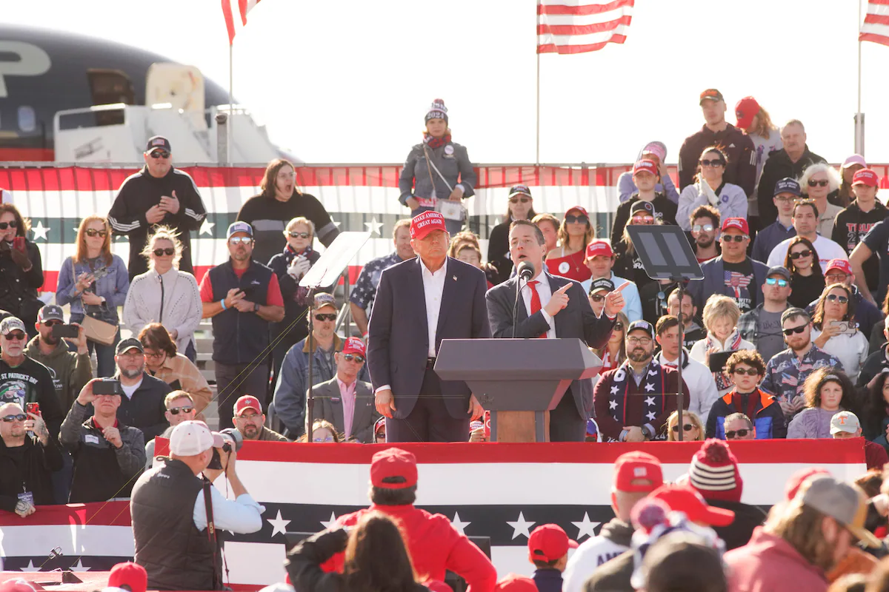

Повернутися на головну
Свіжі політичні новини
«Ніколи Трамп?» Виборців «ніколи не Байдена» може стати більше. Стеля підтримки Байдена зараз фактично нижча, ніж у Трампа. Це різкий розворот у порівнянні з 2020 роком — із серйозними наслідками.
ВАКЕША, Вісконсін. Під час своєї кандидатури від республіканців на посаду сенатора в Огайо бізнесмен Берні Морено безпідставно стверджував, що політичні інсайдери, великі технологічні компанії та ЗМІ сфальсифікували вибори 2020 року. Але після перемоги на праймеріз у березні Морено відмовився сказати, чи вірить він у те, що Джо Байден переміг Дональда Трампа, наполягаючи, що виборці хочуть говорити про інші питання.Знизьте шум виборів 2024 року.

Індекс Dow Jones вперше перевищив 40 000 пунктів завдяки Microsoft і Goldman Sachs. У п'ятницю індекс закрився на рівні близько 40 004, підвищившись на 0,3%. Це свідчить про силу капіталу та економічну стабільність. Інвестори виявляють ірраціональний ентузіазм, що може викликати ризики. Аналітики застерігають від покупок за рекордними цінами. Деякі показники роздрібної торгівлі є вражаючими, але слабші в окремих сегментах. У той час, Джеймі Даймон з JPMorgan висловлює обережність, оглядаючи перспективи ринку. Обсяги акцій реагують на зміну процентних ставок Федеральної резервної системи.
Працівники ТЦК побили чоловіків у Харкові: що відомо про скандальні інциденти

.webp)